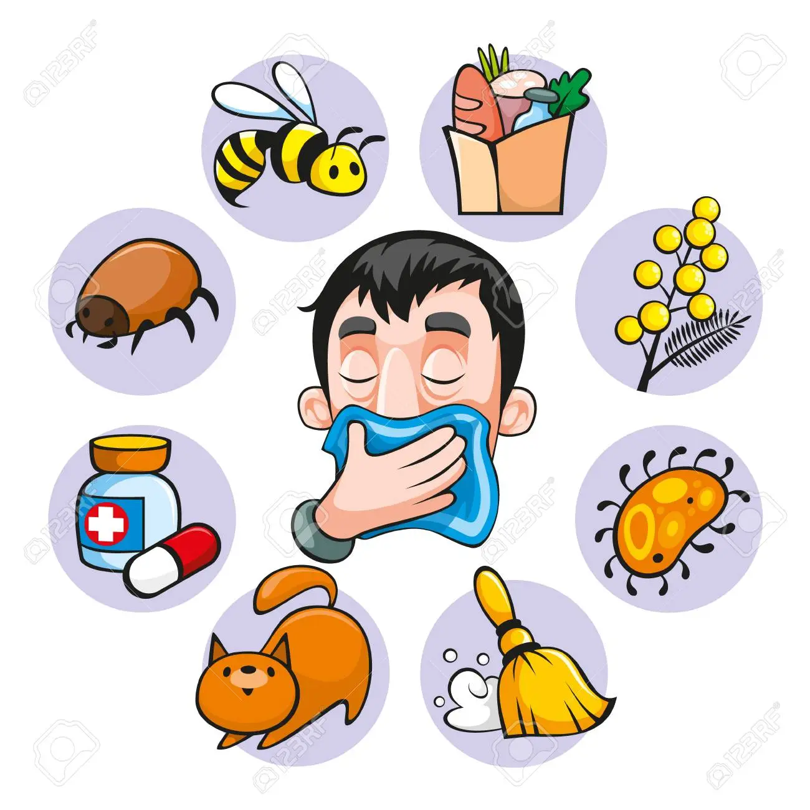

ALLERGIES
Allergies occur when your immune system reacts to a foreign substance — such as pollen, bee venom or pet dander — or a food that doesn't cause a reaction in most people.
Your immune system produces substances known as antibodies. When you have allergies, your immune system makes antibodies that identify a particular allergen as harmful, even though it isn't. When you come into contact with the allergen, your immune system's reaction can inflame your skin, sinuses, airways or digestive system.
The severity of allergies varies from person to person and can range from minor irritation to anaphylaxis — a potentially life-threatening emergency. While most allergies can't be cured, treatments can help relieve your allergy symptoms.

SYMPTOMS
Because there are so many possible causes, the symptoms of allergies vary widely. Airborne allergens, like pollen and pet dander, are likely to cause:
- Eye irritation
- Runny nose
- Stuffy nose
- Puffy, watery eyes
- Sneezing
- Inflamed, itchy nose and throat
Allergens that are consumed, like foods or certain medications, can cause:
- Hives or skin rashes
- Gastrointestinal distress
- Tingling or swelling of the lips, face, or tongue
- Itchiness
- Difficulty breathing or wheezing
- Fainting/ or lightheadedness
REMEDIES
1. Cold compress
One of the fastest and easiest ways to stop the pain and itch of a rash is to apply cold. Whether you choose a cold compress, cool showers, or damp cloth, cold water can bring immediate relief and can help stop swelling, ease itching, and slow the progression of a rash.
Consider making or purchasing fabric bags stuffed with ice. They freeze well, and they can be heated for other uses.
How to use it
Fill an ice bag or plastic bag with ice or dampen a cloth with cold water.
Place a cloth over your skin (never place ice directly on your skin).
Hold on your skin until itching or pain subsides.
Repeat as needed.
How it works
Cold limits blood flow to an inflamed area. When you apply ice or cold water to a rash, it can help reduce swelling and inflammation and can stop itching almost immediately. For rashes that cover more of the body or that affect an area that is difficult to cover with an ice pack, a cool bath or shower may provide relief.
2. Oatmeal bath
Oats (avena sativa) have been used for centuriesTrusted Source to treat many skin conditions, from eczema to burns. The U.S. Food and Drug Administration (FDA) approved the use of oatmeal in suspension (colloidal oatmeal) as a skin protectant in 2003. Today there are many over-the-counter skin products containing oatmeal.
Colloidal oatmeal dissolved in a bath can relieve itchiness. Commercial brands of oatmeal bath, like Aveeno, come in ready-to-use packets, measured
HEALTHY SPIRITS is optimized for learning.Remidies might be simplified to improve reading and basic understanding. Tutorials, references, and examples are constantly reviewed to avoid errors, but we cannot warrant full correctness of all content. While using this site, you agree to have read and accepted our terms of use, cookie and privacy policy.
Copyright 1999-2022 by Refsnes Data. All Rights Reserved.